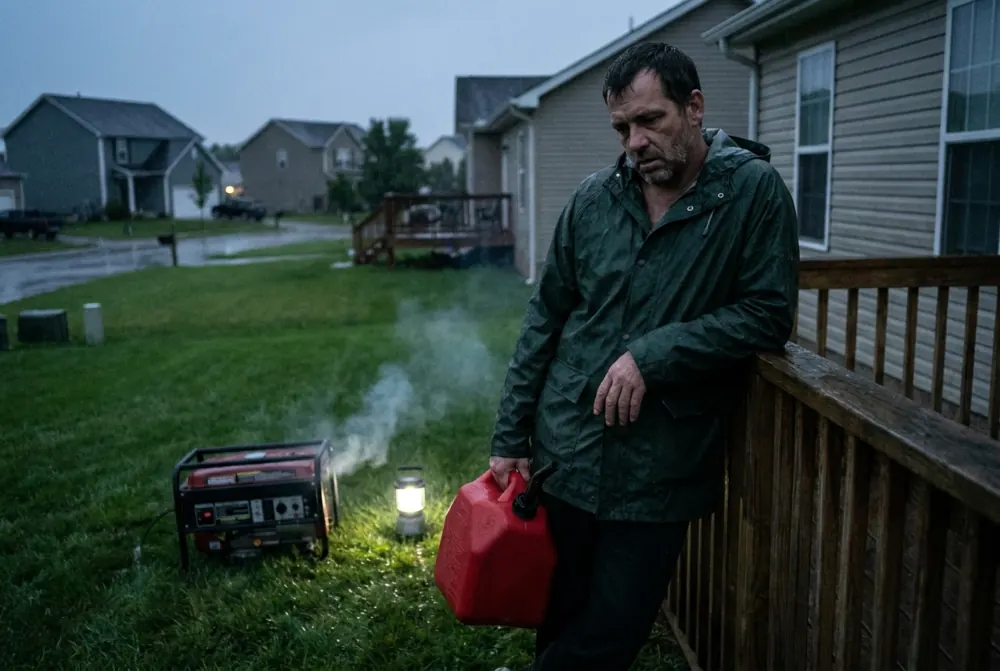
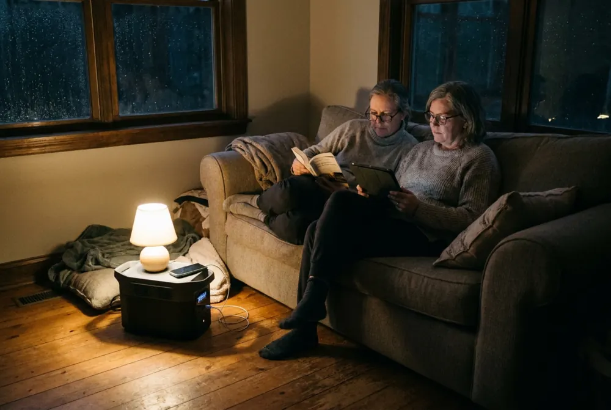

The Power Went Out Again. It Might Be Time to Rethink the Gas Generator.
The fridge goes quiet, the phones start dying, and the only backup plan is a loud machine that has to live outside. There's a quieter way to keep the basics running.

Backup power doesn't have to mean gas cans, pull cords and fumes.Runtime varies by unit, what you plug in, and how much sun you get.
See the solar optionNobody plans their evening around a power outage. It just happens: a storm rolls through, a transformer pops down the street, and the house goes quiet. The first few minutes are almost cozy. Then you start doing the math on the fridge.
How long will the food last? Will the phones make it through the night? Is the Wi-Fi coming back before work tomorrow? The outage itself is rarely the worst part. Not having a plan is.
You've probably lived this

The lights flicker twice and then they're gone. You find the flashlight in the third drawer you check. Your phone is at 20%.
Down the street, a neighbor's generator roars to life. You think about the old one in your garage, the stale gas in the can, the pull cord that never starts on the first try, and the long extension cords through a cracked-open window. You decide to wait it out. Again.
That's not laziness. A gas generator is a real chore: it needs fresh fuel stored somewhere, it has to run outdoors, and it's loud enough that you hear it all night. Safety agencies warn that gas generators belong outside, well away from windows and doors, because their exhaust contains carbon monoxide. So a lot of people just don't bother, and hope the outage is short.
The outage itself is rarely the worst part. Not having a plan you'll actually use is.

Curious what a quiet, plug-in backup looks like? It takes a minute to see.
See the solar optionWhat changed
Solar generators, also called portable power stations, have become a common middle ground. Instead of burning fuel, they store electricity in a large battery. You plug your things straight into it, and you recharge it from solar panels, a wall outlet, or a car.
With no engine there's no exhaust, which is why they can sit inside next to the things they power. They're quiet enough to run in the same room while you sleep.
Waiting it out
- Food in the fridge on a timer
- Phones and Wi-Fi going dark
- Or a loud gas engine running outside
A solar backup ready
- Plug in the essentials and keep going
- Quiet, no fumes, no fuel to store
- Recharges from sunlight or a wall outlet
What a solar generator is good for
- Keeping essentials running through an outage: phones, Wi-Fi, lamps, a fridge for a while.
- Camping, RV trips, tailgates and job sites where there's no outlet.
- What it isn't: a whole-home system. It powers what you plug into it, within its limits.
How it works
- Charge it ahead of timeFrom a wall outlet, a car, or solar panels in the sun.
- Plug in what mattersWhen the power goes out, plug the essentials straight into it.
- Recharge with sunlightSet the panels out during the day to top the battery back up.
Common questions
Can it run my whole house?
No. A portable solar generator powers the devices you plug into it. It's built for essentials like phones, lights, Wi-Fi and small appliances, not central air or a whole electrical panel.
How long will it last in an outage?
It depends on the battery size and what you plug in. Small electronics can run for a long time; big appliances use the battery faster. Check the details on the next page before you decide.
Is it safe to use indoors?
Battery power stations don't burn fuel, so they make no exhaust. Follow the maker's instructions for placement and charging.
Have a plan before the next outage
See how a quiet solar generator could keep your essentials running, and decide if it fits your home.
See the solar option No obligation to buy.